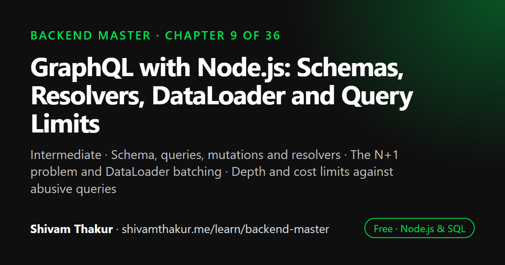

Chapter 9 of 36 · Intermediate
GraphQL with Node.js: Schemas, Resolvers, DataLoader and Query Limits
GraphQL — Ask for Exactly What You Need (and Defend Against Everything That Can Go Wrong)

GraphQL lets clients ask for exactly the fields they need from a single endpoint. This chapter covers schemas and resolvers, the N+1 query problem and per-request DataLoader batching, defences against expensive queries, authorization and how to decide between GraphQL and REST.
In this chapter you will learn
- Schema, queries, mutations and resolvers
- The N+1 problem and DataLoader batching
- Depth and cost limits against abusive queries
- Authorization inside resolvers
- GraphQL versus REST trade-offs
9.0 Why This Chapter Matters
Imagine ShopLine's mobile app has a product screen. It needs:
- The product's name and price.
- Its three latest reviews.
- The name of each reviewer.
With the REST API from Chapter 8 that is:
GET /v1/products/42 → returns 15 fields; the screen uses 2
GET /v1/products/42/reviews?limit=3 → returns each review with a userId
GET /v1/users/7 → once PER reviewer, to get a name (3 more requests)Five round trips (each costing latency, Chapter 2) and a pile of unused data. This is called over-fetching (too much data) and under-fetching (not enough, so more requests). You could add a custom endpoint /product-screen/42 for the app, but then the web app needs a different one, and the tablet app another…
GraphQL flips the model: the client sends a query describing the exact shape it wants, and the server returns exactly that, in one request:
{
product(id: 42) {
name
price
reviews(limit: 3) { rating author { name } }
}
}By the end of this chapter you will be able to:
- Read and write GraphQL schemas, queries, mutations and variables.
- Build a working GraphQL server in Node.
- Recognize and fix the N+1 problem with DataLoader (we'll measure it: 7 database calls → 2).
- Defend against abusive queries (depth limits, cost limits).
- Design schemas and errors that age well.
- Decide honestly between REST, GraphQL and gRPC.
9.1 The Core Idea in One Picture
REST GraphQL
┌──────────────────────┐ ┌──────────────────────────┐
│ Server decides the │ │ Client describes the │
│ shape of each │ │ shape it needs │
│ endpoint's response │ │ │
└──────────────────────┘ └──────────────────────────┘
many endpoints ONE endpoint (/graphql)
fixed responses flexible responses
multiple round trips typically one round trip
versioning (/v1, /v2) evolve the schema in placeReal-Life Analogy: Set Menu vs. À La Carte
REST is a restaurant with set menus: "Combo 1: burger, fries, drink." If you only want the fries, you still receive the combo (over-fetching). If you want a salad too, you order another combo (extra request).
GraphQL is à la carte with a single waiter: you write your exact order on one slip: "the burger, no bun, extra pickles, and a small salad," and the kitchen assembles it in one trip. The price: the kitchen must be ready for any combination, and a customer could order a ridiculous 500-item slip. (Defending the kitchen is §9.9.)
9.2 The Language: Schema and Types
A GraphQL API is defined by a schema, a strongly typed contract written in SDL (Schema Definition Language). The schema is the source of truth for what clients may ask.
Scalar types (the leaves)
Int, Float, String, Boolean, ID (a unique identifier, serialized as a string). You can define custom scalars (DateTime, JSON).
Object types
type Product {
id: ID!
name: String!
price: Float!
reviews: [Review!]!
}
type Review {
id: ID!
rating: Int!
text: String
author: User!
}
type User {
id: ID!
name: String!
}Reading the type notation (this trips everyone up once)
| Notation | Meaning |
|---|---|
String |
A string or null (fields are nullable by default) |
String! |
A string, never null |
[Review] |
A list that may be null, whose items may be null |
[Review!] |
A list that may be null, items never null |
[Review!]! |
A list that is never null, with no null items. The most common choice |
The ! means "non-null guarantee." That promise has a consequence: if a non-null field's resolver fails, GraphQL nulls out the nearest nullable parent (§9.8). Use ! where you can truly guarantee a value.
The three root types: entry points
type Query { # reads (like GET)
products: [Product!]!
product(id: ID!): Product # returns null if not found
}
type Mutation { # writes (like POST/PATCH/DELETE)
addReview(input: AddReviewInput!): Review!
}
type Subscription { # real-time push (§9.12)
reviewAdded(productId: ID!): Review!
}Input types
Arguments of mutations that are objects use input types (not regular type):
input AddReviewInput {
productId: ID!
rating: Int!
text: String
}Other building blocks
enum OrderStatus { PENDING PAID SHIPPED CANCELLED }
interface Node { id: ID! }
type Product implements Node { id: ID! name: String! }
union SearchResult = Product | User9.3 Queries: Asking for Exactly What You Need
query ProductScreen {
product(id: "1") {
name
price
reviews {
rating
author { name }
}
}
}Response mirrors the query shape exactly:
{
"data": {
"product": {
"name": "Notebook",
"price": 120,
"reviews": [
{ "rating": 5, "author": { "name": "Asha" } },
{ "rating": 4, "author": { "name": "Ravi" } }
]
}
}
}Ask for name only and you get only name. Fields you didn't request are never computed or sent.
Variables: never build queries by string concatenation
query ($id: ID!) {
product(id: $id) { name price }
}{ "id": "2" }Variables are sent separately and typed. This prevents injection-style bugs, lets servers cache/parse a query once, and is how every real client works.
Aliases, fragments, directives
query Compare {
cheap: product(id: "2") { ...basics } # alias: same field twice with different args
pricey: product(id: "3") { ...basics }
}
fragment basics on Product { # reusable selection
name
price
}
query ($withReviews: Boolean!) {
product(id: "1") {
name
reviews @include(if: $withReviews) { rating } # conditional field
}
}Mutations
mutation ($input: AddReviewInput!) {
addReview(input: $input) { # a mutation returns data too: pick what you need back
id
rating
author { name }
}
}Mutations at the root run serially (one after another), while query fields may resolve in parallel. So side effects belong in mutations.
The wire format
GraphQL typically runs over plain HTTP, usually one endpoint:
curl -s localhost:3000/graphql \
-H 'Content-Type: application/json' \
-d '{"query":"query($id: ID!){ product(id:$id){ name price } }","variables":{"id":"2"}}'
# {"data":{"product":{"name":"Pen","price":15}}}Important HTTP facts:
- Requests are usually
POST /graphqlwith{ query, variables, operationName }. - Errors still return
200 OK(the HTTP request itself worked; the errors are in the body'serrorsarray). This surprises people, and breaks naive HTTP-status monitoring. You must monitor GraphQL errors explicitly (§9.8). - Because it's usually POST to one URL, HTTP caching and per-URL rate limiting don't work the way they do for REST (§9.11).
9.4 Building a Server: Resolvers
The schema describes the what. Resolvers are the functions that supply the how: one resolver per field, called only if the query asks for that field.
Setup
npm install graphql graphql-http dataloader express(graphql is the reference implementation: parsing, validation, execution. graphql-http is a small spec-compliant HTTP handler. Heavier, batteries-included options: GraphQL Yoga, Apollo Server, Mercurius (Fastify). They all execute the same graphql core. Examples here were run with graphql 17, graphql-http 1.23 and Express 5.)
A complete working server (tested)
// gql.mjs
import express from 'express';
import { buildSchema } from 'graphql';
import { createHandler } from 'graphql-http/lib/use/express';
// ---- a fake database ----
const db = {
users: new Map([[1, { id: 1, name: 'Asha' }], [2, { id: 2, name: 'Ravi' }], [3, { id: 3, name: 'Mei' }]]),
products: [
{ id: 1, name: 'Notebook', price: 120 },
{ id: 2, name: 'Pen', price: 15 },
{ id: 3, name: 'Backpack', price: 899 },
],
reviews: [
{ id: 1, productId: 1, userId: 1, rating: 5, text: 'Great' },
{ id: 2, productId: 1, userId: 2, rating: 4, text: 'Good' },
{ id: 3, productId: 2, userId: 3, rating: 3, text: 'Okay' },
{ id: 4, productId: 3, userId: 1, rating: 5, text: 'Love it' },
],
};
const schema = buildSchema(`
type User { id: ID! name: String! }
type Review { id: ID! rating: Int! text: String author: User! }
type Product { id: ID! name: String! price: Float! reviews: [Review!]! }
input AddReviewInput { productId: ID! rating: Int! text: String }
type Query { products: [Product!]! product(id: ID!): Product }
type Mutation { addReview(input: AddReviewInput!): Review! }
`);
// With buildSchema, a function-valued property on the parent object acts as that field's
// resolver, called as (args, context, info).
const makeReview = (r) => ({
id: r.id, rating: r.rating, text: r.text,
author: async () => db.users.get(r.userId),
});
const makeProduct = (p) => ({
...p,
reviews: async () => db.reviews.filter((r) => r.productId === p.id).map(makeReview),
});
const root = {
products: () => db.products.map(makeProduct),
product: ({ id }) => {
const p = db.products.find((x) => x.id === Number(id));
return p ? makeProduct(p) : null;
},
addReview: ({ input }) => {
if (input.rating < 1 || input.rating > 5) throw new Error('rating must be 1-5');
const r = { id: db.reviews.length + 1, userId: 1, ...input, productId: Number(input.productId) };
db.reviews.push(r);
return makeReview(r);
},
};
const app = express();
app.all('/graphql', createHandler({ schema, rootValue: root }));
app.listen(3000, () => console.log('GraphQL on http://localhost:3000/graphql'));Try it
# one request, exactly the shape the screen needs
curl -s localhost:3000/graphql -H 'Content-Type: application/json' \
-d '{"query":"{ products { name reviews { rating author { name } } } }"}'{"data":{"products":[
{"name":"Notebook","reviews":[{"rating":5,"author":{"name":"Asha"}},{"rating":4,"author":{"name":"Ravi"}}]},
{"name":"Pen","reviews":[{"rating":3,"author":{"name":"Mei"}}]},
{"name":"Backpack","reviews":[{"rating":5,"author":{"name":"Asha"}}]}
]}}# a mutation with variables
curl -s localhost:3000/graphql -H 'Content-Type: application/json' -d '{
"query":"mutation($i: AddReviewInput!){ addReview(input:$i){ id rating author{name} } }",
"variables":{"i":{"productId":"2","rating":5,"text":"Nice"}}}'
# {"data":{"addReview":{"id":"5","rating":5,"author":{"name":"Asha"}}}}The resolver signature
Every resolver receives four things (in the standard graphql-js form (parent, args, context, info)):
| Argument | Meaning |
|---|---|
parent (root) |
The object the field belongs to (the Product when resolving reviews) |
args |
Arguments passed in the query ({ id: "2" }) |
context |
Per-request shared object: logged-in user, DB handle, DataLoaders, request id |
info |
The query's AST and metadata (rarely used directly) |
Execution model: a tree walk
Query.products ──▶ resolver returns [P1, P2, P3]
│
├─ P1 ─ Product.reviews ──▶ [R1, R2] ─┬─ R1.author ──▶ User
│ └─ R2.author ──▶ User
├─ P2 ─ Product.reviews ──▶ [R3] └─ ...
└─ P3 ─ Product.reviews ──▶ [R4]GraphQL calls the resolvers level by level, once per parent object. Hold that image in your head, because it is exactly what causes the next section's problem.
9.5 The N+1 Problem and DataLoader
The problem (measured)
Look at what happens for { products { reviews { author { name } } } } when each resolver hits the database independently:
1 call: load all products (in this demo it's in-memory)
3 calls: reviews for P1, reviews for P2, reviews for P3 ← N calls, one per product
4 calls: author for R1, R2, R3, R4 ← M calls, one per reviewThis is the N+1 query problem (Chapter 15 covers it in SQL, and it's the same disease): one query to get a list, then N more, one per item. With 100 products and 10 reviews each, that's 1 + 100 + 1,000 = 1,101 database queries for one GraphQL request. REST has the problem too, but GraphQL makes it easy to trigger by accident, because each resolver is written in isolation and doesn't know its siblings are running.
I instrumented the demo's fake database with a call counter. Naive resolvers, same 3-product query:
GET /stats → {"dbCalls": 7} (3 review lookups + 4 user lookups)The fix: DataLoader (batch + cache per request)
DataLoader (from Facebook) is a tiny utility that:
- Collects all
load(key)calls made during one tick of the event loop (remember Chapter 5!). - Batches them into a single call with an array of keys.
- Caches results so asking for the same key twice returns the same promise.
import DataLoader from 'dataloader';
// A batch function: gets ALL keys at once, must return results in THE SAME ORDER as the keys.
const userLoader = new DataLoader(async (ids) => {
const users = await db.usersByIds(ids); // ONE query: WHERE id IN (...)
return ids.map((id) => users.find((u) => u.id === id));
});
// in a resolver, instead of querying directly:
author: (_args, ctx) => ctx.userLoader.load(review.userId),Visualization:
tick N: R1.author → load(1) R2.author → load(2) R3.author → load(3) R4.author → load(1)
└─────────────┴──────────────┬───────────────┴──────────────┘
▼
batch function called ONCE with keys [1, 2, 3] (key 1 de-duplicated)
▼
SELECT * FROM users WHERE id IN (1,2,3)Wiring it into the server (tested)
Create the loaders per request, inside the context function:
app.all('/graphql', createHandler({
schema,
rootValue: root,
context: () => ({
userLoader: new DataLoader((ids) => db.usersByIds(ids)),
reviewLoader: new DataLoader((productIds) => db.reviewsForProducts(productIds)),
}),
}));
const makeReview = (r) => ({
id: r.id, rating: r.rating, text: r.text,
author: (_a, ctx) => ctx.userLoader.load(r.userId),
});
const makeProduct = (p) => ({
...p,
reviews: async (_a, ctx) => (await ctx.reviewLoader.load(p.id)).map(makeReview),
});Same query, same result, now:
GET /stats → {"dbCalls": 2} ← one batched review query + one batched user querySeven calls became two, and the gap grows with data: in the 100-product example, 1,101 queries become 3.
Other rules of the batch function
- Must return an array the same length and order as the input keys (use
nullor anErrorfor missing ones). - Keys should be primitives (strings/numbers) or you must supply
cacheKeyFn. - Also batch by relationship: "reviews for many products" is one query grouped in code (as our
reviewsForProductsdoes).
9.6 Errors: Not What You're Used To
Three kinds of failure
1. Syntax / validation errors (the query itself is wrong): nothing is executed.
curl -s localhost:3000/graphql -H 'Content-Type: application/json' -d '{"query":"{ products { nope } }"}'{"errors":[{"message":"Cannot query field \"nope\" on type \"Product\". Did you mean \"name\"?",
"locations":[{"line":1,"column":14}]}]}(Note the helpful suggestion, and the exact location. The schema makes this possible. Compare that with a REST typo that silently returns nothing.)
2. Resolver errors (your code threw):
curl -s localhost:3000/graphql -H 'Content-Type: application/json' \
-d '{"query":"mutation{ addReview(input:{productId:\"2\",rating:9}){ id } }"}'{"errors":[{"message":"rating must be 1-5","locations":[{"line":1,"column":11}],"path":["addReview"]}],"data":null}3. Partial results: if one field fails, other fields can still succeed. For a nullable field, you get null for just that field plus an entry in errors. For a non-null field (!), the failure bubbles up, nulling the nearest nullable ancestor. In the mutation above, addReview: Review! is non-null, so the whole data became null.
All of these return HTTP 200
Your monitoring and clients must inspect errors. If you alert only on HTTP 5xx, a broken GraphQL API can look 100% healthy.
Don't leak internals
By default, resolver exception messages are returned to clients. A thrown Error('connect ECONNREFUSED 10.0.0.5:5432') would reach the browser. In production:
- Catch internal errors, log them with the request id, and return a generic message.
- Throw deliberate, safe errors for expected failures, with a machine-readable code in
extensions:
import { GraphQLError } from 'graphql';
throw new GraphQLError('Not enough stock', {
extensions: { code: 'OUT_OF_STOCK', productId: '2' }, // clients switch on `code`, not message
});Errors as data (for expected business outcomes)
For outcomes users should see (validation failed, out of stock), many teams model them in the schema instead of using the top-level errors:
union AddReviewResult = Review | ValidationFailed | AlreadyReviewed
type ValidationFailed { field: String! message: String! }
type AlreadyReviewed { message: String! }
type Mutation { addReview(input: AddReviewInput!): AddReviewResult! }mutation {
addReview(input: {...}) {
__typename
... on Review { id rating }
... on ValidationFailed { field message }
... on AlreadyReviewed { message }
}
}Now the client is forced by the types to handle each outcome, and the top-level errors stays reserved for the unexpected (bugs, outages). It's the GraphQL equivalent of REST's 4xx vs 5xx.
9.7 Authentication and Authorization
GraphQL has no built-in auth. You build it, and the single endpoint makes the pitfalls sharper.
Authentication: once, at the edge, into context
Authenticate the HTTP request with ordinary middleware (JWT/session; Chapter 21) and put the user in context:
createHandler({
schema, rootValue: root,
context: (req) => ({
user: req.raw.user ?? null, // set by your auth middleware earlier in Express
userLoader: new DataLoader(...),
}),
});Authorization: at the data, not just at the door
In REST, one URL ≈ one permission check. In GraphQL, a client can reach the same object through many paths: product → reviews → author → orders → items → product…. If you only protect Query.me, someone may reach private data via review.author.email.
Rules:
- Put authorization in the business/service layer that every resolver calls (
orderService.getById(user, id)), not copied into each resolver, and not only on top-level fields. - Check ownership on every object fetch, e.g.,
order.userId === ctx.user.id || ctx.user.role === 'admin'. - Field-level protection for sensitive fields (
email,costPrice): returnnull/throw unless allowed. - Don't rely on hiding fields from the schema docs. Introspection can be on or off, but obscurity isn't security.
// resolver stays thin; the service enforces rules
order: ({ id }, ctx) => orderService.getForUser(ctx.user, id), // throws FORBIDDEN / returns nullThis is the same "BOLA/IDOR" vulnerability that tops the OWASP API Security list (Chapter 22/23). GraphQL makes it easier to leave a back door open, because there are so many paths to each object.
9.8 Securing and Hardening a GraphQL API
A GraphQL server accepts client-authored programs. That's powerful and dangerous. Unlike REST, where you decide the cost of each endpoint, here the attacker chooses the query.
Attack 1: Deeply nested queries
With a self-referencing schema (product → related → related → related…) a tiny query can explode into billions of operations:
{ product { related { related { related { related { related { name } } } } } } }Defense: depth limiting. A validation rule runs before execution and rejects too-deep queries. I wrote a minimal one and tested it:
import { GraphQLError } from 'graphql';
const depthLimit = (max) => (ctx) => {
let depth = 0;
return {
Field: {
enter(node) {
if (node.name.value.startsWith('__')) return; // allow introspection fields
if (++depth > max) ctx.reportError(
new GraphQLError(`Query is too deep (max ${max})`, { nodes: node }));
},
leave() { depth--; },
},
};
};
createHandler({ schema, rootValue, validationRules: [depthLimit(3)] });Results (max 3):
{ product { related { name } } } → {"data":{...}} ✔
{ product { related { related { related { name } } } } } → {"errors":[{"message":"Query is too deep (max 3)", ...}]}(That hand-rolled rule doesn't follow fragment spreads (fragments can hide depth). In production use a maintained library such as graphql-depth-limit or the built-in protections of Yoga/Apollo/Envelop plugins.)
Attack 2: Expensive-but-shallow queries (breadth and cost)
{ a: products(limit: 1000) { reviews(limit: 1000) { author { orders(limit: 1000) { id } } } } }Depth is only 4, but the work is 10⁹. Defense: query cost analysis. Assign each field a cost (list fields multiply by their limit), sum it before executing, and reject above a budget. Also:
- Cap every
limitargument (max 100) and require pagination on every list. - Cap aliases and batched operations (a client can send 1,000 aliased copies of
login(...)in one HTTP request to bypass per-request rate limits and brute-force passwords).
Attack 3: Introspection abuse
The built-in __schema query reveals your entire API. It's great in development (powers GraphiQL and codegen). In production for private APIs, disable it; for public APIs it's often fine (the docs are public anyway), but never treat the schema as secret.
Attack 4: Query flooding / denial of service
- Timeouts: cancel executions after N seconds.
- Request size limits: cap the HTTP body (the
express.jsonlimit still matters). - Rate limit by cost, not by request count, since one request may equal a thousand.
- Persisted queries (allow-listing): clients send a hash (
{ id: "sha256:ab12..." }) of a query you pre-registered at build time; the server rejects anything unknown. This effectively converts GraphQL into a closed set of known operations, giving you the safety (and cacheability) of REST while keeping the developer experience. It is the strongest defense for first-party apps.
Attack 5: Information leakage
Disable detailed error messages and stack traces in production; avoid "Did you mean…" suggestions on public APIs if you want to prevent schema enumeration.
The hardening checklist
- Depth limit and cost limit.
- Max page sizes; all lists paginated.
- Alias/batch-operation limits (especially for auth mutations).
- Per-request DataLoaders; N+1 eliminated.
- Authorization in the service layer for every object fetch.
- Generic production error messages; codes in
extensions; log with request ids. - Execution timeout and body-size limit.
- Introspection decision made deliberately.
- Persisted queries for first-party clients.
- Monitor GraphQL
errors(HTTP 200 hides them) and per-operation latency.
9.9 Pagination: The Connection Pattern
GraphQL's widely adopted pagination convention (from Relay) is cursor-based, matching the principles of Chapter 8:
type Query {
products(first: Int = 20, after: String): ProductConnection!
}
type ProductConnection {
edges: [ProductEdge!]!
pageInfo: PageInfo!
}
type ProductEdge {
cursor: String! # opaque, per item
node: Product!
}
type PageInfo {
hasNextPage: Boolean!
endCursor: String
}{
products(first: 2) {
edges { cursor node { id name } }
pageInfo { hasNextPage endCursor }
}
}Next page: products(first: 2, after: "<endCursor>"). Edges exist so relationship-specific data (e.g., "added on" date) can live on the connection, and every item has its own cursor. Many teams simplify to { items, nextCursor } when they don't need Relay-compatible clients; either is fine, as long as it is cursor-based, bounded and consistent.
9.10 Designing a Good Schema
- Design for the product, not the database. The schema models how clients think about the domain (
Order { items, total, canCancel }), not your table layout. - Be specific with names:
addReview,cancelOrder(verb + noun for mutations); avoid genericupdate. - One input object per mutation (
input: AddReviewInput!) and a dedicated payload type. They are easy to extend without breaking changes. - Prefer non-null only when you can guarantee it. A nullable field can fail gracefully; a wrong
!can null large parts of a response. - Use enums for fixed sets, custom scalars for
DateTime,Money,Email. - Return the changed object (or a payload with it) from mutations so clients can update their caches.
- Global object IDs (
Nodeinterface) enable refetching and caching by ID. - Don't expose internals (join tables, foreign keys, database ids you may change).
Evolution without versions
GraphQL's evolution story is the reverse of REST's /v2: you never remove, only add and deprecate.
type Product {
price: Float! @deprecated(reason: "Use priceInfo { amount currency } instead")
priceInfo: Money!
}Old clients keep asking for price; new ones use priceInfo. Because clients name exactly the fields they use, you can measure which fields are still in use (tracing/usage reporting) and remove one only when nobody asks for it. That's a major strength.
Adding fields/types is always safe. Removing a field, changing a type, or making an argument required is breaking.
9.11 Caching: GraphQL's Weak Spot
REST's cache story is built on URLs and HTTP caching (Chapter 3). GraphQL breaks that:
- Everything is
POST /graphql; POSTs aren't cached by default. - Each query is a different shape; CDNs can't key on a URL.
- Responses are partial views of overlapping data.
Strategies:
| Layer | Technique |
|---|---|
| Client | Normalized caches (Apollo Client, urql, Relay) store objects by __typename + id and update them automatically when mutations return changed objects |
| Server (field level) | Cache expensive resolvers (Redis/in-memory), invalidate on writes (Chapter 27); DataLoader's per-request cache |
| HTTP / CDN | Persisted queries sent as GET /graphql?id=abc123&variables=..., which become cacheable URLs; add Cache-Control hints per field |
| Database | Same as always: indexes, query cache |
If your API is mostly public, read-heavy and cache-friendly (a product catalog behind a CDN), REST's native caching is a real advantage.
9.12 Subscriptions: Real-Time Updates
A subscription is a long-lived query: the server pushes a new result whenever an event occurs.
subscription {
reviewAdded(productId: "1") { id rating author { name } }
}Transport is typically WebSockets (the graphql-ws protocol) or Server-Sent Events. On the server, resolvers return an async iterator fed by a pub/sub system:
// conceptual
Subscription: {
reviewAdded: {
subscribe: (_p, { productId }, ctx) => ctx.pubsub.asyncIterator(`REVIEW_ADDED_${productId}`),
},
},
Mutation: {
addReview: async (...) => { /* save */ ctx.pubsub.publish(`REVIEW_ADDED_${productId}`, { reviewAdded: review }); return review; },
}Operational realities (Chapter 10 covers WebSockets properly):
- Each subscription holds an open connection and memory. Plan capacity.
- With multiple server instances you need a shared pub/sub backend (Redis, Kafka) so an event published on instance A reaches subscribers on instance B.
- Authenticate at connection time and re-check authorization for each event.
- If you only need occasional updates, polling or SSE may be simpler.
(Subscriptions were not run in this chapter's tests; they require a WebSocket transport and are covered conceptually here and in depth in Chapter 10.)
9.13 GraphQL vs REST vs gRPC: An Honest Comparison
| REST | GraphQL | gRPC | |
|---|---|---|---|
| Shape of response | Server-defined | Client-defined | Server-defined (Protobuf) |
| Round trips for related data | Several (or custom endpoints) | Usually one | Several or streaming |
| Caching | Excellent (HTTP/CDN) | Hard (needs persisted queries/client cache) | Custom |
| Typing / contract | OpenAPI (optional) | Built-in schema | Built-in schema (.proto) |
| Tooling & discoverability | Mature | Excellent (introspection, GraphiQL, codegen) | Good (codegen) |
| Performance | Good | Good (resolver overhead; N+1 risk) | Excellent (binary, HTTP/2) |
| Browser-friendly | Native | Native | Needs gRPC-web proxy |
| File uploads | Easy (multipart) | Awkward (spec extension) | Streaming |
| Real-time | SSE/WebSockets | Subscriptions | Bidirectional streaming |
| Security surface | Smaller, per-endpoint controls | Larger (query abuse, authz paths) | Smaller |
| Learning curve | Lowest | Medium | Medium-high |
| Best for | Public APIs, CRUD, cacheable content, simple integrations | Rich client apps with varied data needs; many client types; aggregating many sources | Service-to-service inside your infrastructure; low latency; streaming |
When to choose GraphQL
- Multiple clients (web, iOS, Android, partners) with different data needs from the same backend.
- Deeply connected data and screens that join many entities.
- Frontend teams that need to iterate without waiting for new endpoints.
- An API gateway/BFF (Backend For Frontend) aggregating several microservices (often with federation).
When not to
- A simple CRUD API with one client. REST is less work.
- Heavily cacheable public content.
- File-heavy or streaming-heavy workloads.
- A small team without capacity to harden it (depth/cost limits, observability).
A very common healthy architecture: REST/gRPC between services, GraphQL at the edge for client apps.
9.14 Tooling and the Ecosystem
| Tool | Use |
|---|---|
| GraphiQL / Apollo Sandbox | Interactive in-browser explorer using introspection (autocomplete, docs, run queries) |
| GraphQL Yoga / Apollo Server / Mercurius | Full-featured servers with plugins, subscriptions, file upload, caching hooks |
| Pothos / Nexus / TypeGraphQL | Code-first schema builders (type-safe in TypeScript) |
| GraphQL Code Generator | Generates TypeScript types and typed hooks from schema + queries |
| Apollo Client / urql / Relay | Frontend clients with caches |
| Apollo Federation / GraphQL Mesh | Compose many services' schemas into one supergraph |
| Envelop | Plugin system (depth limit, caching, tracing) around graphql-js |
Schema-first (write SDL, attach resolvers) is what we used; code-first defines types in code and generates the SDL. Both are valid; code-first with TypeScript removes drift between schema and resolvers.
9.15 ShopLine and GraphQL
For our project, REST (Chapter 8) is the primary public API: cacheable catalog, simple integrations, partners. A GraphQL layer would make sense as a BFF for the mobile app (product screen with reviews and authors in one round trip). We'll keep the REST design as the main line of the book and treat GraphQL as an optional edge layer, reusing the same service layer (Chapter 11). The business rules live in services; REST routes and GraphQL resolvers are two thin skins over them.
REST routes ───┐
├──▶ services (rules, authorization) ──▶ repositories ──▶ DB
GraphQL ┘
resolvers9.16 Edge Cases and Gotchas Checklist
- N+1 queries: resolvers calling the DB per parent. Add DataLoader / batched queries.
- DataLoader created once instead of per request → cross-user data leaks and stale data.
- Batch function returns results in the wrong order/length → wrong data attached to wrong keys.
- Monitoring only HTTP status: GraphQL errors come back as
200. - Internal error messages and stack traces exposed to clients.
- No depth/cost limits → trivially denial-of-service-able.
- Unbounded list fields / missing max
first/limit. - Alias or array batching used to brute-force login mutations past rate limits.
- Authorization only at top-level fields → data reachable via other paths (IDOR/BOLA).
- Over-using
!: one failing field nulls a huge parent. - Breaking schema changes (removing fields, making args required) without checking usage.
- Mutations performing side effects inside queries.
- Putting business logic in resolvers instead of services (hard to test and reuse).
- Introspection and "did you mean" suggestions on a private/internal API in production.
- Using GraphQL where plain cacheable REST would be simpler and faster.
- Forgetting subscriptions need a shared pub/sub across instances.
9.17 Chapter Summary
- GraphQL lets clients specify exactly the data shape they need from a single endpoint, solving over-fetching, under-fetching and multi-round-trip screens.
- A schema (SDL) is a typed contract: scalars, objects,
!non-null, lists, enums, input types, and the rootQuery/Mutation/Subscription. - Queries, variables, fragments, aliases and mutations form the client language; the response mirrors the query shape.
- Resolvers supply data per field, receiving
(parent, args, context, info); execution walks the query tree, calling resolvers once per parent. - The N+1 problem is GraphQL's classic trap. We measured 7 database calls → 2 by using DataLoader (batching + caching), created per request.
- Errors arrive in an
errorsarray with HTTP 200; non-null (!) failures bubble up. Useextensions.code, hide internals, and consider errors-as-data unions for expected outcomes. - Auth is yours to build: authenticate into
context, authorize in the service layer on every object fetch. - Harden: depth and cost limits, pagination caps, alias limits, timeouts, persisted queries, careful introspection.
- Caching and monitoring need extra care; evolution is done by adding and deprecating, not versioning.
- Choose between REST, GraphQL and gRPC by client diversity, caching needs and team capacity.
9.18 Revision Notes
- SDL:
type,input,enum,interface,union;String!non-null;[T!]!non-null list of non-null items. - Operations:
query(read),mutation(write, serial),subscription(stream). - Always send variables separately; fragments reuse selections;
@include/@skipconditionals. - Resolver
(parent, args, context, info); context holds user, loaders, request id. - N+1 →
DataLoader(batchFn);batchFn(keys)returns array in key order; new DataLoader per request. - Errors: validation (no execution) vs resolver errors vs partial data; HTTP 200 regardless;
extensions.code. - Security: depth limit, cost analysis, max
first, alias limits, timeouts, persisted queries, authz in services. - Pagination: Relay connections
edges/node/cursor/pageInfo. - Evolve with
@deprecated; measure field usage; never remove blindly. - Cache: client normalized cache, persisted GET queries, field-level server cache.
9.19 Mind Map (ASCII)
GRAPHQL (Ch. 9)
│
┌────────────┬─────────────┬────────┼────────────┬──────────────┬────────────┐
SCHEMA OPERATIONS EXECUTION PROBLEMS SECURITY DECISIONS
│ │ │ │ │ │
SDL types query resolvers N+1 → depth limit REST: cache,
! non-null mutation (parent, DataLoader cost limit simple, public
[T!]! lists subscription args, ctx, per-request max first GraphQL: varied
enums/input variables info) batch+cache alias limit clients, one
interface/ fragments tree walk errors in persisted round trip
union aliases per parent body, 200 queries gRPC: service-
@deprecated directives context: caching is authz in to-service,
user, hard service layer streaming
loaders timeouts9.20 Cheat Sheet
SCHEMA type Product { id: ID! name: String! reviews: [Review!]! }
input AddReviewInput { productId: ID! rating: Int! }
type Query { product(id: ID!): Product } type Mutation { addReview(input: AddReviewInput!): Review! }
QUERY query($id: ID!){ product(id:$id){ name reviews{ rating author{ name } } } }
HTTP POST /graphql { "query": "...", "variables": {...}, "operationName": "..." } → 200 even on errors
SERVER npm i graphql graphql-http express dataloader
app.all('/graphql', createHandler({ schema, rootValue, context: () => ({ loaders }), validationRules }))
RESOLVER (parent, args, context, info) => value | Promise
DATALOADER new DataLoader(async keys => keys.map(k => result)) // same order & length
ctx.userLoader.load(id) // create loaders PER REQUEST
ERRORS throw new GraphQLError('msg', { extensions: { code: 'OUT_OF_STOCK' } })
HARDEN validationRules:[depthLimit(n)] + cost limit + max first + alias cap + timeout + persisted queries
PAGINATE products(first: 20, after: $cursor){ edges{ cursor node{...} } pageInfo{ hasNextPage endCursor } }
EVOLVE field: T @deprecated(reason: "...") (add, never silently remove)
MEASURED naive resolvers 7 DB calls → DataLoader 2 DB calls9.21 Key Takeaways
- GraphQL moves control of the response shape to the client, trading server simplicity and HTTP caching for client flexibility and fewer round trips.
- A resolver per field means N+1 by default; DataLoader (per request!) is the standard cure.
- The client writes the "program" the server runs, so you must bound it: depth, cost, pagination, timeouts, persisted queries.
- Authorization belongs in the service layer, because the same object is reachable through many paths.
- Errors live in the response body with HTTP 200, so instrument for them.
- Keep business logic in services so REST, GraphQL (and background jobs) share one set of rules.
9.22 20 Multiple Choice Questions
Tap an answer to check it. Your score updates as you go.
Score: 0 / 0 answered (20 questions)
What problem does GraphQL primarily address?
What does
[Review!]!mean?Which operation type should perform side effects?
What HTTP status does GraphQL typically return when a resolver throws?
Why use variables instead of building query strings by concatenation?
In
(parent, args, context, info), what belongs incontext?What is the N+1 problem?
How did DataLoader reduce the demo from 7 database calls to 2?
What is the serious risk of creating a DataLoader once at server start?
What must a DataLoader batch function return?
What does a depth-limit validation rule defend against?
Why isn't a depth limit sufficient on its own?
How can attackers bypass per-request rate limits in GraphQL?
What is a persisted query (allow-list)?
Why must authorization be enforced in a service layer rather than only on top-level fields?
What happens when a non-null (
!) field's resolver fails?Which is GraphQL's recommended way to evolve a schema?
Why is HTTP caching harder with GraphQL?
Which typically fits service-to-service communication best?
What does the "errors as data" pattern (union result types) achieve?
Show the answer key
1-b, 2-b, 3-b, 4-b, 5-a, 6-b, 7-a, 8-b, 9-b, 10-b, 11-b, 12-b, 13-b, 14-b, 15-b, 16-b, 17-b, 18-b, 19-b, 20-b
9.23 20 Hands-on Exercises
Easy
- Run the §9.4 server. Send the product query three ways: curl, GraphiQL (or Postman's GraphQL tab), and a Node
fetch. - Write a query that fetches only
namefor all products. Confirm the response contains nothing else. - Rewrite a query to use variables, and send an invalid variable type; read the error.
- Add an alias so one request fetches products
1and3under namesfirstandthird. - Add a fragment for
{ name price }and use it on two fields. - Introduce a typo in a field name and read the validation error (including its location and suggestion).
- Add
@include(if: $withReviews)and run the query with the variable true and false.
Medium
- Add a
Mutation.addProduct(input)with validation. Return a clear error withextensions.codefor invalid prices. - Add a call counter to your fake DB and reproduce 7 calls with naive resolvers; then add DataLoader and reproduce 2.
- Prove the per-request rule: create a shared DataLoader, update a user's name between two requests, and show the stale value; then fix it.
- Implement
Query.products(first, after)using the Relay connection shape with cursors. - Add a
depthLimit(3)validation rule and test queries at depth 3 and 4; explain how a fragment could bypass your simple version. - Cap
firstat 50 and return aGraphQLErrorwith codeBAD_USER_INPUTfor larger values. - Hide internal errors: wrap resolvers so unexpected exceptions return "Internal error" plus a request id, while deliberate
GraphQLErrors pass through.
Hard
- Implement authorization: add
User.emailvisible only to the user themself or an admin, andQuery.order(id)enforcing ownership via a service function. Write tests for the allowed and forbidden paths, including reaching the data throughreview.author. - Implement a simple query cost calculator (each field costs 1; list fields multiply by
first), reject queries above 1,000, and show a "wide but shallow" query being blocked. - Implement persisted queries: a build-time script hashes your client queries; the server accepts
{ "id": "<hash>" }and rejects unknown documents. Demonstrate the rejection. - Show an alias-based brute-force attack on a
loginmutation (100 aliases in one request) and add an alias limit. - Implement a
Subscription.reviewAddedusinggraphql-ws(or GraphQL Yoga) with an in-memory pub/sub; then explain what must change to run two server instances. - Build a REST endpoint and a GraphQL resolver that share the same
productService. Write one set of service-level unit tests, and demonstrate that both entry points enforce identical rules.
9.24 5 Interview Questions
1. What is the N+1 problem in GraphQL and how do you fix it?
Model answer: Resolvers run per field per parent, so listing N parents and resolving a child field triggers N additional queries. Fix: batch with DataLoader (collects keys within a tick, issues one WHERE id IN (...) query, maps results back in order, caches per request), or fetch relations eagerly using joins/look-ahead from the info argument. Always create DataLoaders per request to avoid cross-request leaks. Verify with query counters or tracing.
2. How would you secure a public GraphQL API? Model answer: Authenticate in HTTP middleware and place the user in context; authorize in the service layer on every object access (BOLA); enforce depth, complexity/cost, pagination caps and alias/batch limits; set execution timeouts and body-size limits; use persisted queries for first-party clients; rate limit by cost; disable or consciously decide on introspection and detailed errors in production; log operation names and errors (since HTTP status is always 200) and monitor them.
3. Compare REST and GraphQL. When would you pick each? Model answer: REST has simple, cacheable, resource-oriented endpoints and a small attack surface; GraphQL gives clients control over response shape, a typed schema, fewer round trips and evolution via deprecation, but needs N+1 handling, cost controls and bespoke caching. Choose REST for public, cacheable, CRUD-ish APIs and simple integrations; GraphQL for diverse client apps with varying data needs or as a BFF aggregating services; gRPC for internal service-to-service calls.
4. How does error handling differ in GraphQL, and how do you design it well?
Model answer: The HTTP status is typically 200 and failures appear in an errors array with possible partial data; non-null violations propagate to the nearest nullable parent. Good design: throw GraphQLError with extensions.code for expected conditions, hide internals and log with request IDs, model expected business outcomes as union result types, and instrument error rates by operation since HTTP-level monitoring won't catch them.
5. How do you evolve a GraphQL schema without versioning?
Model answer: Only make additive changes; mark replaced fields @deprecated(reason), track field-level usage via tracing/usage reporting, communicate to client teams, and remove fields only when usage reaches zero. Avoid breaking changes like removing fields, changing types, or adding required arguments; introduce new fields or new input/payload types instead.
9.25 3 Real Projects
Project 1: GraphQL Product Catalog with DataLoader (beginner–intermediate, ~5 hours).
Build a catalog API (categories, products, reviews, users) with queries, a mutation, and Relay-style pagination. Instrument a DB-call counter exposed at /stats, write a test that asserts a representative nested query uses ≤ 3 DB calls, and graph the before/after of adding DataLoader at 10, 100 and 1,000 products.
Project 2: Hardened GraphQL Gateway (intermediate–advanced, ~8 hours).
Put a GraphQL layer in front of the Chapter 8 REST ShopLine API (a BFF): resolvers call REST via fetch with timeouts and propagate X-Request-Id. Add authentication, ownership checks, depth and cost limits, alias limits, persisted queries, error masking with request IDs, and a test suite of "attack queries" that must all be rejected. Add metrics for operations, errors and latency.
Project 3: Live Reviews with Subscriptions (advanced, ~8 hours).
Add Subscription.reviewAdded(productId) using graphql-ws over WebSockets, authenticated at connect time and re-authorized per event. Run two server instances with Redis pub/sub so a review created on instance A reaches a subscriber on instance B. Write a load script that opens 5,000 subscriptions and report memory and latency, and document the limits you found.
9.26 Further Reading
- graphql.org/learn: Queries, Schemas and Types, Execution, Best Practices.
- The GraphQL specification (spec.graphql.org): short and very readable.
- Production Ready GraphQL by Marc-André Giroux: security, performance and schema design.
- DataLoader README (github.com/graphql/dataloader).
- OWASP: GraphQL Cheat Sheet and API Security Top 10 (BOLA, resource consumption).
- Apollo docs on Federation and Persisted Queries; GraphQL Yoga and Envelop docs for production plugins.
- Relay's Cursor Connections Specification for pagination.
Up next → Chapter 10: gRPC, WebSockets, SSE and Webhooks
REST and GraphQL are request-response: the client always asks first. But what about a chat message that must appear instantly, a live order-tracking map, a payment provider that needs to tell you an invoice was paid, or two internal services that need to talk at wire speed? That's where real-time and event-driven communication comes in.
GraphQL with Node.js: frequently asked questions
What is the N+1 problem in GraphQL?
Resolving a list and then querying the database once per item produces one query for the list plus N for the items. DataLoader batches the per-item lookups made in the same tick into a single query.
Why create DataLoader per request?
A DataLoader caches results. A shared instance would leak data between users and serve stale values, so create a new one for each request.
How do you stop expensive GraphQL queries?
Limit query depth and complexity, set timeouts and pagination caps, disable introspection where appropriate in production and use persisted queries for public APIs.
Should I use GraphQL or REST?
REST is simpler and caches well over HTTP. GraphQL is useful when many different clients need different shapes of the same data, at the cost of extra complexity in caching, authorization and performance control.